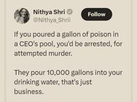

0

An anonymous reader quotes a report from MIT News: Currently, lithium hard rock extraction involves baking the rock at over 1,000 Celsius and chemically leaching it to extract lithium. The rest of the rock is discarded. Now, a team of researchers from MIT and elsewhere has developed a low-temperature process for extracting battery-grade lithium from the most common type of lithium-bearing mineral. The process uses a liquid reagent to dissolve the rock into the useful forms of its constituent parts: not just battery-ready lithium salts, but also smelter-grade alumina and cement-ready silica. After the minerals are extracted, the solvent and reagent can be recovered and used again so waste levels approach zero. The researchers estimate the closed-loop process is half the cost of traditional lithium hard rock extraction and could make it cost-competitive with extracting lithium from brine water. "We believe this approach is the lowest-energy, lowest-cost way of getting lithium not only out of hard rock, but period," says Yet-Ming Chiang, MIT's Kyocera Professor of Materials Science and Engineering. "That's what's motivating us to scale this. It will enable the energy transition through batteries that use lithium. This was one of the goals of The Climate Project at MIT -- to work on projects that, within a short number of years, could transition from the lab to commercialization and impact."
A paper describing the process has been published in the journal Science.
Read more of this story at Slashdot.
A new Grundfos report warns that Europe's datacenter boom could strain water supplies and power grids unless regulators bake water and energy efficiency into planning, reporting, and incentives for new facilities. The Register reports: According to the report, the EU-wide server farm IT load is about 10 GW today, and is expected to rise to 35 GW by 2030 -- just four years away. These facilities account for about 3 percent of all electricity consumption now, but this is projected to hit 7-9 percent by the end of the decade. Water and energy are intertwined in cooling systems. Grundfos claims that cooling infrastructure accounts for a substantial share of a datacenter's resource use, representing about 38 percent of total electricity consumption in an average facility, while water demand in large hyperscale facilities can reach 11,356 to 18,927 cubic meters per day -- enough for up to 155,000 EU households.
Rapid growth in bit barns is placing increased pressure on energy systems, water resources and local infrastructure, the report notes. Without careful coordination, inefficient or poorly sited facilities risk exacerbating these problems and triggering public opposition. [...] Grundfos advises regulators to integrate water efficiency and cooling design requirements directly into planning approvals for new facilities and any large-scale expansions to encourage adoption of efficient cooling technologies. It also advocates investment incentives from governments such as tax credits, green financing mechanisms, and grant programs for technologies that demonstrably reduce energy and water consumption. Integration between server halls and district heating networks is another aspect worth consideration, the report adds.
Read more of this story at Slashdot.
Anthropic has released Claude Opus 4.8 with stronger performance and better handling of uncertain or flawed data, including a greater tendency to flag issues rather than make unsupported claims. The update also introduces a "Dynamic Workflows" research preview for coordinating complex tasks across many subagents. TechCrunch reports: Opus 4.8 comes with the expected best-in-class benchmark results, but there's also particular attention to how the model manages bad or uncertain data. In the launch post, Anthropic's early testers found that the new model is "more likely to flag uncertainties about its work and less likely to make unsupported claims." Echoing this point, a testimonial from Bridgewater associates said the biggest difference in the upgrade was "Opus 4.8's tendency to proactively flag issues with the inputs and outputs of an analysis, something other models routinely missed and left to the users to catch."
Together with the new model, Anthropic launched a feature called Dynamic Workflows, which will be available in research preview. The system is designed to help larger models like Opus manage complex tasks across hundreds of parallel subagents. "Claude Code alongside Opus 4.8 can now carry out codebase-scale migrations across hundreds of thousands of lines of code from kickoff to merge, with the existing test suite as its bar," the post explains. As for Mythos, Anthropic's most advanced model, the company hinted it could be made publicly available in the not too distant future. "We're making swift progress on developing these safeguards and expect to be able to bring Mythos-class models to all our customers in the coming weeks," the company wrote.
Read more of this story at Slashdot.
An anonymous reader quotes a report from Cybernews: The technology giant Microsoft has been accused of leaking the data of civil servants working for the Netherlands' regulatory agencies to the US House of Representatives. The civil servants affected by the leak work at the Authority for Consumers and Markets (ACM) and the Dutch Data Protection Authority (AP), according to the NL Times. They are involved in implementing the Digital Services Act (DSA), the European Union regulation on online services, aimed at combating illegal content and protecting user rights.
NL Times reports that Microsoft shared emails, minutes, and invitations sent by the civil servants without redacting their names in the documents. Willemijn Aerdts, Dutch State Secretary for Digital Economy and Sovereignty, said she discussed the allegations with US Ambassador to the Netherlands Joe Popolo. [...] The allegations against Microsoft further strengthen concerns over Europe's dependence on American technologies, which poses major risks to data privacy. Further reading: Netherlands Blocks US Takeover of Vital Digital Supplier
Read more of this story at Slashdot.
IBM and Red Hat are committing $5 billion to a new initiative called "Project Lightwell," which aims to secure open-source software supply chains with AI-assisted vulnerability discovery, triage, patch validation, and upstream maintenance. Longtime Slashdot reader wiggles shares a press release from IBM: IBM and Red Hat today announced Project Lightwell, a $5 billion commitment backed by new frontier AI capabilities and a global force of more than 20,000 engineers to help enterprises secure open source software. Together, these investments establish a new model for enterprise use of open source software, from upstream development through production environments.
Project Lightwell will establish a trusted enterprise clearinghouse combined with a global force of engineers to identify and fix vulnerabilities at scale. The clearinghouse will serve as a security coordination layer, using advanced AI capabilities to validate and test fixes across an unprecedented volume of open source code. These capabilities will be offered through commercial subscriptions, allowing enterprises to integrate secure patches directly into their existing software supply chains with enterprise-grade validation and lifecycle management.
IBM and Red Hat have already begun collaborating with a select group of early adopters on Project Lightwell, including Bank of America, BNY, Citi, Goldman Sachs, JPMorganChase, Mastercard, Morgan Stanley, Royal Bank of Canada, State Street, Visa and Wells Fargo. The real-world insights from these initial deployments will actively shape how vulnerabilities are identified, validated, and remediated at scale across complex software supply chains.
Read more of this story at Slashdot.
Robinhood is launching beta support for a new feature that will let AI agents make payments and trade stocks on users' behalf. The company is also rolling out a virtual credit card for AI agents, with spending limits and approval controls. TechCrunch reports: Robinhood said users on its platform can now create a separate account for their AI agents and connect them to a dedicated wallet. While these agents would be able to read and analyze users' portfolios to come up with trading strategies and suggest investments, they'll only be able to access the pre-loaded balance in the dedicated wallet to place orders.
Users will get notifications of all trades their AI agent makes and will be able to monitor their activities within the Robinhood app. For some trades, agents will show a preview that users may have to approve before the order is executed. The company said it has also built in fraud detection protection, in which a team from Robinhood would review suspicious trades and help users resolve disputes.
Robinhood says users can connect their AI agents to its Model Context Protocol (MCP) service to do things like analyze concentration risk and sector exposure, execute trades, or look through analyst notes to identify new investment opportunities across various sectors. The agentic trading feature is launching in beta and only allows stock trading right now. The company says it plans to add support for options, crypto, event contracts, futures, and prediction markets soon.
Read more of this story at Slashdot.
An anonymous reader quotes a report from CNBC: Federal prosecutors charged a Google employee with fraud on Wednesday, alleging that he made $1.2 million off of bets using insider information on Polymarket. Prosecutors claim that Michele Spagnuolo, a staff information security engineer at Google, used confidential information to place trades correctly betting that singer d4vd would be Google's most searched person in 2025. Spagnuolo has been charged with money laundering, commodities fraud and wire fraud. The complaint, filed in the Southern District of New York, was unsealed on Wednesday.
Spagnuolo was arrested Wednesday morning in New York, ABC reported. "Spagnuolo had access to Google's internal data systems, including a particular Google internal software tool that provided him access to confidential, nonpublic Year in Search data," the prosecutors said in their complaint. Some observers of the Polymarket platform flagged the user "AlphaRaccoon" back in December for suspicious trades on the most searched person contracts. The complaint Wednesday said that Spagnuolo was the person behind that account. "Google officially and publicly announced its Year in Search 2025 results on or about December 4, 2025. Soon after it did so, Spagnuolo's AlphaRaccoon account, profited approximately $1.2 million on his Google Year in Search 2025-related bets," the complaint said.
[...] Spagnuolo is also facing a civil case from the Commodity Futures Trading Commission, where he's charged with insider trading. The complaint detailed that Spagnuolo correctly predicted the outcomes of a slew of other search markets, including contracts like "Will Zohran Mamdani rank in the Top 5 most searched" and "Will Squid Game be the #1 searched TV show." "Spagnuolo misappropriated the material Confidential Information by knowingly or recklessly using it to trade the 2025 Year in Search List Contracts in breach of his duties of trust and confidentiality," the CFTC complaint alleged.
Read more of this story at Slashdot.
ETH Zurich researchers say they have generated certified "perfect randomness" for the first time by using a quantum Bell-test setup with two entangled superconducting chips connected by a 30-meter cooled link. "In the long term, this work could play a similar role in digital security as atomic clocks do for timekeeping: a physically certified source of randomness that other systems can rely on," reports Phys.org. "Possible applications range from the encryption of sensitive communications and digital identities to public randomness services for lotteries and blockchain applications." From the report: They call their method randomness amplification. "This was made possible by an improved so-called Bell-Test with simultaneously high quality and high data rate," says [Renato Renner and Andreas Wallraff]. He and his coworkers use a complex setup that consists of two superconducting chips, which they cool down to very low temperatures close to absolute zero. Each chip represents a quantum bit or qubit, which can take on the states "0" or "1" or any arbitrary superposition of these states. A 30-meter-long tube, which is also cooled down, connects the two chips.
Microwave photons can fly back and forth between them, thus creating quantum mechanical entanglement. This means that a quantum measurement on one qubit, which randomly yields the values "0" or "1," influences automatically and at a distance whether "0" or "1" is measured on the second qubit. The separation of 30 meters ensures that, during the measurement, even at the speed of light, no information can be exchanged between the qubits. This would disturb the perfect randomness.
Wallraff and his team made the choice of the exact type of measurement (or "measurement basis" in technical jargon) on the two qubits depending on an imperfect random number generator. Renner's coworkers could then amplify the randomness of the measurement results further using a special algorithm. "The resulting sequence of zeros and ones is now really perfectly random, and we can even certify that," says Renner. He likens this result to crossing a ridge: "The technical improvements allowed us, for the first time, to create random numbers that will remain perfectly random for all eternityâ"no matter what analytical methods are used to assess their randomness."
The findings have been published in the journal Nature.
Read more of this story at Slashdot.
An anonymous reader quotes a report from Ars Technica: Now sites have a new way to spy on their visitors: measuring subtle interactions with their solid-state drives. The technique, named FROST (fingerprinting remotely using OPFS-based SSD timing), allows sites to monitor other sites a visitor is viewing and what apps are open on their devices. The technique, laid out in a research paper (PDF), exploits a side channel, a form of leak resulting from physical manifestations such as electromagnetic emanations, data caches, or the time required to complete a task. By measuring the manifestations, attackers can decrypt encrypted traffic and infer other confidential data.
The attack that FROST uses is known as a contention side channel, which measures the interaction of various processes all using (or competing for) a given resource. By measuring the timing of certain I/O (input-output) operations of the SSD a visitor is using, the researchers were able to determine the websites open in other tabs -- even on other browsers -- and the apps that were open on the visitor's device. FROST requires no interaction from the visitor other than opening the site hosting the attack. [...] Unlike previous contention side-channel attacks on SSDs, FROST runs exclusively in the browser. It uses JavaScript that interacts with the OPFS (origin private file system), an allocated storage space that's reserved for a specific site to run code needed to complete a given task. Websites can create one with no interaction required by the visitor.
While each file system is sandboxed, meaning it's isolated from other websites and from the device system itself, the JavaScript can measure the I/O interactions. Then, by running those interactions through a pretrained convolutional neural network -- a system that uses deep learning to analyze text, audio, and images -- the attacker can deduce various apps and websites open on the device. "The attacker continuously measures SSD contention by performing random reads from a large OPFS file," the researchers explained. "SSD contention caused by user activity causes measurable latency differences for these read operations. By training a convolutional neural network (CNN) on these traces, the attacker can fingerprint user activity on the host system by classifying new traces using the trained model."
Read more of this story at Slashdot.
A senior CIA official, David Rush, was arrested after investigators found more than $40 million in gold bars and about $2 million in cash at his Virginia home. According to the New York Times, "The only charge lodged against David Rush is that he inflated his academic credentials and obtained military leave pay worth tens of thousands of dollars." From the report: The court papers describe Mr. Rush as a "former senior executive service-level employee at a United States government agency." People familiar with the investigation say he until very recently held a senior position at the C.I.A. In a joint statement, the C.I.A. and F.B.I. said the arrest occurred on May 19, after the agency alerted the bureau. "After a C.I.A. internal investigation identified potential violations of the law, C.I.A. Director John Ratcliffe referred the information to the F.B.I. for a law enforcement investigation," the statement said.
From last November to March, the court papers say, Mr. Rush asked for, and received, "a significant quantity of foreign currency and tens of millions of dollars in gold bars for work-related expenses." When the C.I.A. conducted a review of where the gold and currency were stashed, the agency was "unable to locate the gold bars or significant amounts of the foreign currency," according to court papers.
On May 18, F.B.I. agents searched Mr. Rush's home and found "approximately 303 gold bars, each of which weighed approximately one kilogram," according to an affidavit. Based on the price of gold, the affidavit said, the estimated value of the gold exceeded $40 million. Investigators also seized nearly three dozen luxury watches, many of them Rolexes. The court papers do not indicate why Mr. Rush appears to have kept so much gold, and $2 million in U.S. currency, in his home, or what work project would have required him to amass such wealth.
Read more of this story at Slashdot.
NASA has outlined a three-phase plan to build a lunar base at the moon's south pole. The first phase, from 2026 to 2029, will focus on robotic missions, landers, rovers, reactors, satellites, and Blue Origin's Blue Moon Mark 1 Endurance test. Later phases will add habitats, power systems, communications, cargo logistics, and rotating crews. Wired reports: According to a recent press conference, phase one will be particularly active: at least 25 missions and 21 surface landings. Without detailing specific dates, the agency said that over the next three years it will send rovers, including manned models for future mobility, drones, surface reactors, new-generation satellites, and payloads to prepare the ground.
One of the first key missions will be the test of the Blue Moon Mark 1 Endurance module in fall 2026. Its purpose is to evaluate conditions for a controlled descent and validate navigation and positioning technology. It will not carry astronauts. If the mission is successful, Blue Origin plans a manned version around 2028, possibly with Blue Moon Mark 2. Moon Base II and III missions are also part of the program's 2026 startup. One will send rovers and payloads to evaluate more complex rover operations; the other will carry scientific instruments to study the behavior of materials and systems under extreme lunar conditions.
Phase two, starting in 2029, marks the beginning of semipermanent infrastructure assembly and first occupancy operations. NASA plans to install advanced energy systems, including surface reactors, initial habitat elements, and more robust communication networks. Up to 60 tons of cargo will be delivered in 24 missions during this period.
Phase three is for scale-up. The infrastructure in place will be strengthened and expanded to form durable centers with constant turnover of personnel. NASA envisions a lunar south pole with habitable modules, reliable power systems, logistics networks for cargo and crew transportation, and the shipment of about 38 tons of cargo annually for maintenance and expansion. "Every mission, crewed and uncrewed, will be a learning opportunity as we return to the lunar surface, build the infrastructure to stay, and master the skills required to live and operate in one of the most demanding and dangerous environments imaginable," said administrator Jared Isaacman in a NASA statement. "We will go for the science, for all we stand to gain from an economic and technological perspective, for the innovations that will make life better here on Earth, and to prepare for where we will inevitably go next."
Read more of this story at Slashdot.
An anonymous reader quotes a report from Gizmodo: In an era where Silicon Valley's conservatism is both expressed openly and becoming more intense by the day, it's strange to think that tech was once seen as a hive of liberalism. The right-wing nature of today's tech industry means that its products tend to also be seen as serving right-wing interests, either in their actual operation (like X's openly and unrepentantly right-wing chatbot Grok) or by the simple fact that their existence serves to enrich a small group of very powerful, very conservative people.
But does it have to be this way? Can LLMs and AI agents find a place in the toolkit of progressive activist groups? The conviction that they can is the idea behind a new app called Outcry, which provides a chatbot designed specifically as a "private, on-device AI mentor for activists, organizers and movement builders." (There's also a web version, although it obviously lacks the privacy benefits of being entirely offline.) It's the brainchild of Occupy Wall Street co-creator Micah White, who recently wrote a blog post about the thinking behind the project.
[...] Outcry's other distinguishing feature is that its dataset is entirely offline -- it's included with the download. According to the readme, the entire dataset is downloaded to your device at first launch, and stored in your library's Application Support directory. So, how effectively does Outcry serve as a guide for collective action? "I'd say that its information is pretty high-level and general, not least because its offline nature prevents it from accessing specific details not contained in its database," writes Gizmodo's Tom Hawking.
He continued: "This app has the potential to be a really valuable resource, especially for people who are just beginning to become involved with activism and genuinely don't know where to begin -- and getting over that first step can be hard."
Read more of this story at Slashdot.
Illinois lawmakers on Wednesday passed a landmark AI safety bill (SB 315) that would require major AI companies to publish safety plans, submit annual third-party testing reports, report serious incidents quickly, and protect whistleblowers who flag emerging risks. OpenAI and Anthropic supported the bill, which could make Illinois a testing ground for state-level AI governance as federal regulation remains stalled. Ars Technica reports: To force companies to be more transparent about rapid developments, Illinois would likely rely on "the Big Four accounting and auditing firms -- Deloitte, EY, KPMG, and PwC -- to audit their safety practices," [said Scott Wisor, a policy director at a nonprofit called Secure AI Project, which supported the bill]. The required independent audits will likely frustrate Trump, who has tried and failed to stop states from implementing AI safety laws as Congress stalls on passing any legislation.
For Trump, the priority has been to promote AI industry interests, but he began considering expanding federal government safety testing after Anthropic's Mythos was released and the AI firm limited access due to safety concerns. Whether or not governments at any level are prepared to protect society from the most catastrophic AI risks remains a major concern for critics who wonder how and when governments will intervene. After inside sources started leaking the details of Trump's AI safety testing plans, critics warned that even the federal government may lack the necessary expertise to audit frontier AI models. And it seems the same criticism extends to independent auditors that Illinois may rely on but industry insiders suggest some AI firms may not entirely trust.
Adam Kovacevich is CEO of Chamber of Progress, a trade group that opposed SB 315 and counts Google and Apple among its members. He told Wired that Illinois' requirements "would force companies to expose sensitive systems to untested auditors in a regulatory regime that's all liability and no standards." Governor J.B. Pritzker confirmed his intent to sign, proclaiming that "Illinois is leading the nation in holding Big Tech accountable."
"I look forward to signing SB 315 and working with the legislature so that AI, when used, is used responsibly," Pritzker said.
Steve Wimmer, a senior policy and technical advisor for the Transparency Coalition, said his group considers the law to be "one of the most important pieces of legislation in 2026."
Read more of this story at Slashdot.
Valve's Steam Deck has sold out again despite a steep price increase that pushed the 1TB OLED model as high as $949 -- about $300 above its original price. "Even with the $300 price bump, the Steam Deck sold out after less than 24 hours back in stock," reports IGN's Jacqueline Thomas. "I don't know how many units Valve was able to stock into its store, but it does seem like Valve spent a couple weeks building up its stock before putting the handheld back on its store." IGN reports: Over the last couple weeks, Valve has been receiving plenty of "game console" shipments from China. At first, I thought this was a sign that the company was getting ready to finally release the Steam Machine, but it looks like at least a portion of these shipments â" if not all of them -- were Steam Deck restocks. That's a lot of Steam Decks to sell through at these inflated prices, but it's also possible that Valve is just staggering its stock so that its delivery infrastructure isn't overwhelmed.
Now its just a question of when the Steam Deck will come back in stock. Before yesterday, the Deck was sold out for months. At the time, it was the most affordable way to get into PC gaming, especially in the face of the RAM crisis. That's no longer true, but it looks like the Steam Deck's popularity is enough to make it sell out regardless. Maybe the higher price will at least help Valve keep it in stock for people who still want to buy it, no matter the cost. Earlier this week, Valve announced a price increase of more than 40% for two of its Steam Deck models, citing "rising memory and storage costs."
The price changes, according to Valve, reflect "the current state of component costs and other global logistical challenges across the industry as a whole."
"The 512GB tier of its OLED handheld gaming PC -- the newer model with an upgraded display -- will now cost $789, an increase of 43%," notes the BBC. "The larger 1TB model will cost $949, an increase of 46%."
Read more of this story at Slashdot.
Last.fm announced that it is independent again after separating from Paramount Skydance, nearly two decades after CBS acquired the music-tracking service in 2007. The company says accounts, scrobbles, privacy settings, Pro subscriptions, and billing information will remain intact. Additional details are forthcoming. Engadget reports: "Today, Last.fm begins a new chapter as an independent company," the announcement reads. "Ownership has changed, but the product you use every day has not." It also said that it will keep its current team. Last.fm is a music website that can track what you listen to across platforms, apps and streaming services, including Spotify, YouTube and Apple Music.Â
[...] Last.fm started as an internet radio station in 2002, and it didn't get scrobbling until a few years later when it merged with the original team that created the tracking process. It operated as an independent company until it was acquired by CBS Interactive, which is now part of the merged Paramount Skydance Corporation, for $280 million in 2007. In 2014, it killed off its $3-a-month subscription radio service to focus on tracking your listening habits on other providers. The company promised to share more about what you can expect from the transition in the coming weeks, but everything will work on Last.fm "exactly as it did yesterday" for now.
Read more of this story at Slashdot.
Reuters : Former Tesla data labelers say FSD relies on laborious mapping for hazards; crash data analysis shows Tesla exaggerates FSD's safety via flawed methodology — Tesla says its Full Self-Driving software is up to 10 times safer than human drivers. But the figures the company uses to support …
Evan Halper / Washington Post : Allegations that China is behind US data center protests draw criticism from allies of the AI industry, who say the industry and politicians are in denial — Claims that China and overseas propaganda drive Americans to rise up against data centers are based on scant evidence. — Summary
Cheng Ting-Fang / Nikkei Asia : MediaTek says it has started to use Intel Foundry's advanced chip packaging in addition to TSMC's, as the mobile chip designer bets on AI demand for growth — TAIPEI — MediaTek says it has started working with Intel for advanced chip packaging in addition to its existing relationship with TSMC …
Maria Curi / Axios : OpenAI says it has briefed the White House on its new biodefense program, which uses GPT-Rosalind to help develop biodefense and pandemic preparedness tools — OpenAI is launching a tool to help develop new biodefense and pandemic preparedness capabilities, according to an announcement shared first with Axios.
Martin Coulter / Sifted : London-based Inherent, which aims to combine human scientific research with AI to produce innovations, emerges from stealth with $50M led by Index Ventures — London-based Inherent has recruited Entrepreneurs First cofounder Matt Clifford as an adviser — London-based AI lab Inherent …
Danny Park / The Block : Paxos says the US SEC has approved its registration as a clearing agency, allowing it to provide clearing and settlement services for eligible transactions — Quick Take — Paxos said its subsidiary, Paxos Securities Settlement Company (PSSC), has received registration as a clearing agency …
Bloomberg : Lenovo's stock is up 105% in May, marking its biggest monthly gain since 1999, after earnings showed AI-related revenue helped offset rising memory costs — Lenovo Group Ltd. recorded its best month in more than a quarter-century, with the stock doubling in May as investor enthusiasm built around …
Financial Times : Blue Origin's New Glenn rocket, which exploded during testing on Thursday, was set to ferry 48 Amazon Leo satellites on Monday; Amazon paid Blue Origin $2.7B — Failure comes days before planned launch of internet satellites for Amazon
Jo Constantz / Bloomberg : A look at Anthropic's hiring process, which prohibits AI use in interviews and features a culture interview that candidates describe as highly intense — To win a coveted role, candidates shouldn't outsource their thinking to AI — and should be prepared to talk about their worldview.
Katrina Bianca Cuaresma / DealStreetAsia : EY-Parthenon: VC funding for Singapore startups fell 34% YoY to $4.6B in 2025, with AI startups accounting for 42.8% of the 472 deals, raising $1.4B, up 28% YoY — Singapore-based AI startups raised about S$1.8 billion ($1.4 billion) in 2025, accounting for nearly a third …
Financial Times : A look at strains in the UK's fintech sector, as former industry darlings are forced to overhaul their operations or merge under pressure to reach profitability — Shachar Bialick credits his stint in the Israel Defense Forces 25 years ago for instilling in him the determination to build …
Bloomberg : Sources: SpaceX is currently targeting an IPO valuation of at least $1.8T, down from a previous $2T+ target, after consultations with advisers and investors — SpaceX is currently targeting a valuation of at least $1.8 trillion in its initial public offering, according to people familiar with the matter …
Cissy Zhou / Nikkei Asia : Tencent bets on smaller AI models in the race with Chinese rivals, as EVP Dowson Tong says AI now contributes 20%+ of its revenue and 95%+ of new internal code — HONG KONG — As competition for AI users intensifies in China, Tencent is taking a different approach than rivals Alibaba …
Bloomberg : BYD announces the Xuanji A3 chip, which it calls China's most powerful chip for ADAS and the centerpiece of its new laptop-sized central computing platform — BYD Co., the world's largest electric vehicle maker, unveiled a series of technology advances including what it calls China's most powerful chip for self-driving cars.
Financial Times : UK Chief Secretary to the Treasury Lucy Rigby warns that rejecting AI in public services means choosing “decline”, vowing to prioritize its Whitehall rollout — Newly appointed chief secretary to the Treasury Lucy Rigby wants to roll out technology across Whitehall